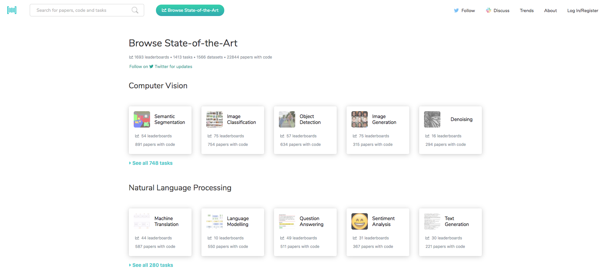
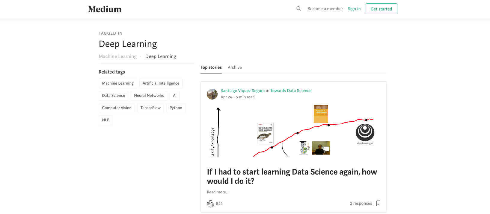
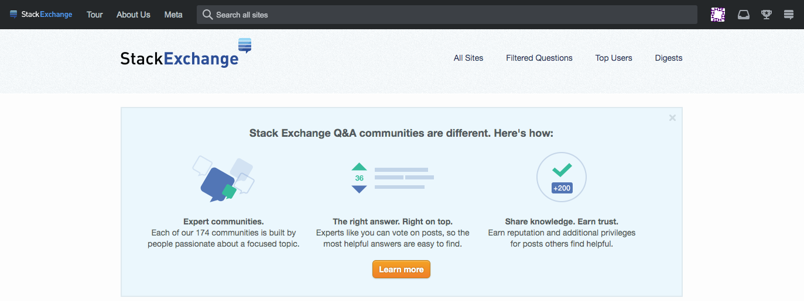
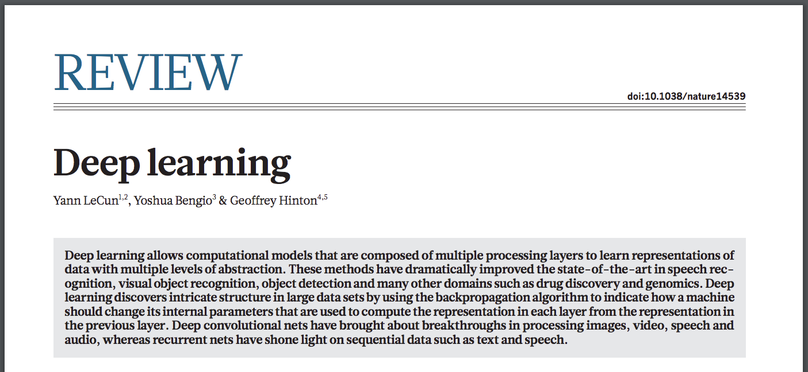

Deep Learning - Week 2
Course starts soon..
PREPARATION
Somebody missed the first class?
Somebody had problem with Mattermost?
Somebody had problem with Coursera?
Did everybody receive the OpenCampus Coursera Invitation?
OpenCampus on Coursera
QUESTIONS
Do you have any question?
Questions can be about anything:
course, exercise, website, problems, tools..
RESOURCES
In case you need more material, you can check out these websites:
Papers with Code
Two Minute Papers Videos
Medium Articles
The Deep Learning Book
It is availabe in HTML format on the website.
A PDF version was created on Github
Community Exchange
The largest community for Q&A.
PAPER OF THE WEEK
Deep Learning, Y. LeCunn, Y. Bengio and G. Hinton,
Nature, 2015
QUIZ
1. What are supervised and unsupervised training? Which one is more similar to a course?
2. Is it clear what an activation function is? Is ReLU better then sigmoid? Why?
3. do you have an intuition about forward and backpropagation? Can you describe it with a real-life example?
DISCUSSION AND ANSWERS
For the next week